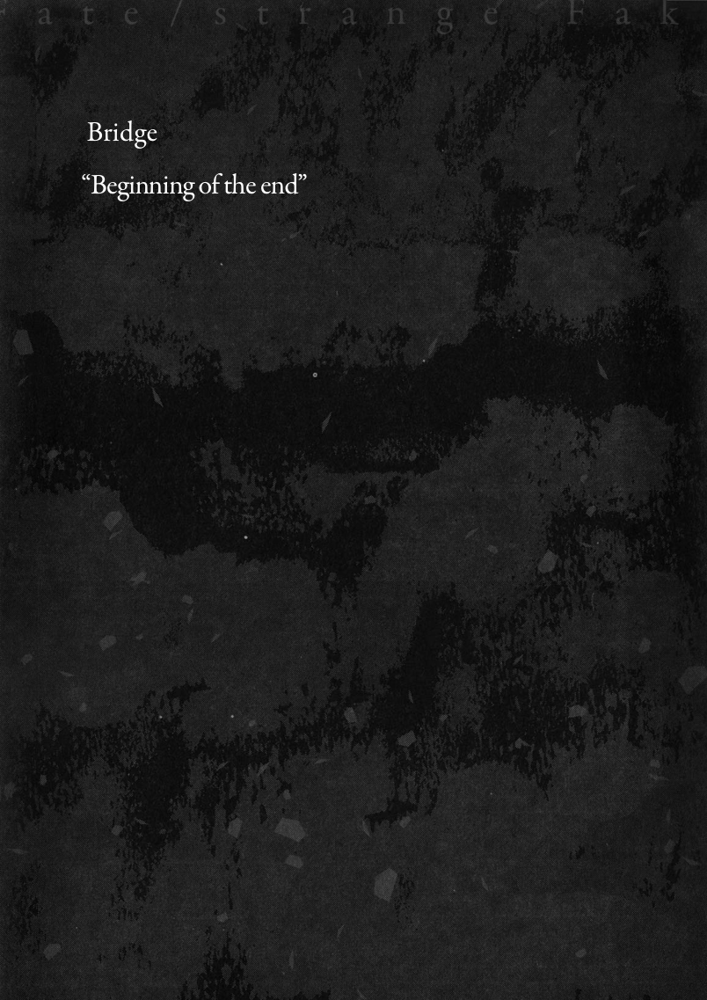
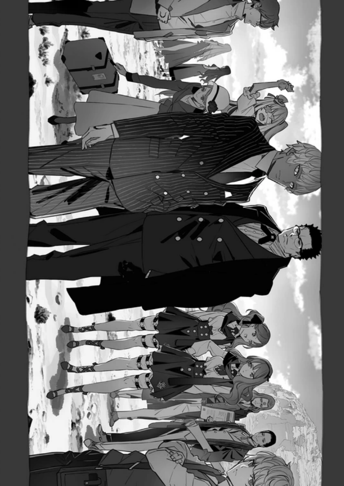
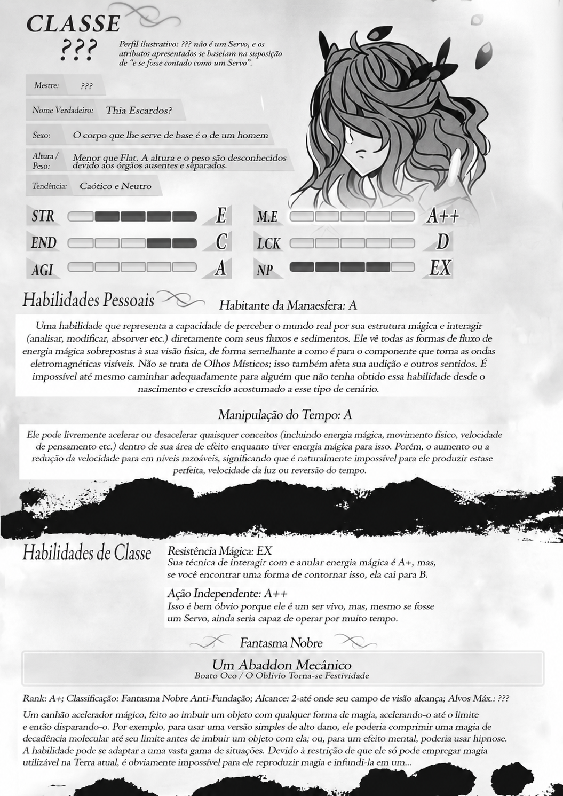
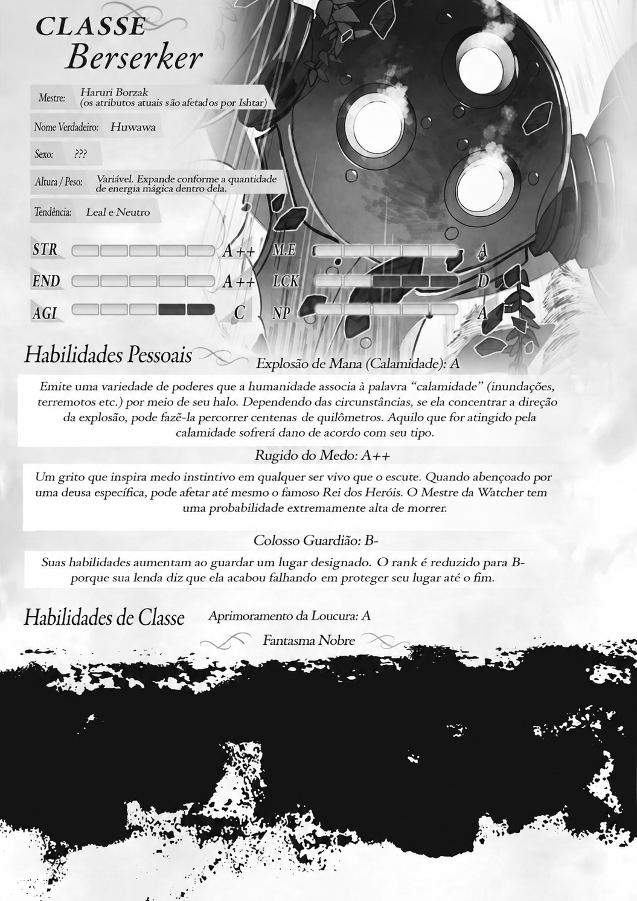

"Começo do fim"
No ???
Quando Ayaka Sajou voltou a si, estava de pé, incapaz de se mover, em um lugar que nunca tinha visto antes.
O quê...?
Ela se confundiu com a vastidão repentina do lugar, mas, ao mesmo tempo, percebeu que sua presença ali era ambígua.
E, por isso, soube que o que estava acontecendo era algo que já tinha experimentado várias vezes antes.
Ah, entendi... Estou sonhando com o passado do Saber de novo.
Seu ponto de vista se movia contra a própria vontade.
Ela se perguntava quando iria acordar, mas, ao mesmo tempo, também sentia curiosidade de conhecer o passado de Saber: a vida de Ricardo I.
Que tipo de vida alguém precisa ter vivido para ser tão positivo assim?
Seus pensamentos foram interrompidos pela aparição de um homem pouco convencional.
"E aí, Richard."
Outra voz soou nos ouvidos de Ayaka em resposta.
"Veio me impedir de novo?"
"Não, nunca mais. Eu já perdi minha chance. A esta altura, você já pôs as coisas em movimento."
Ele usava um chapéu-coco berrantemente decorado, óculos steampunk e uma máscara de gás.
Ao ver aquele jovem cuja roupa pareceria deslocada em qualquer era da história, Ayaka lembrou na mesma hora que o nome dele era Saint-Germain.
Ele aparecera em um sonho anterior, quando ela espiara o passado de Saber. Naquele sonho, surgira em um carro, apesar da época. Ayaka achou aquela introdução indiferente ao período algo muito memorável.
E a outra coisa que ela achou memorável era:
"Perdão por interromper em um momento tão corrido, mas preciso lançar em você aquele encantamento importantíssimo. Relaxe e escute. O grande charlatão tem umas coisas para contar sobre a situação mais recente, mas isso fica para depois... Depois que você terminar o trabalho de hoje. Só vou lhe adiantar que a conversa não vai ser agradável; não estou aqui para consolá-lo."
"..."
"E você aí dentro dos olhos dele, consegue me ouvir? Aqui é o seu amigo Saint-Germain."
!!!
"Se você ainda está seguindo o Coração de Leão contra a própria vontade, então não vai ver o resto do sonho. Basta fechar os olhos, tampar os ouvidos e esperar a hora de acordar. Mas, se por acaso você decidiu caminhar ao lado desse rei excessivamente corajoso, não vou impedi-la de assistir à próxima cena. Embora você seja livre para fingir que não viu nada."
É mesmo. Isso já aconteceu antes. Esse esquisito consegue me ver aqui...
Ayaka tentou dizer alguma coisa em voz alta, mas não conseguiu, porque não tinha um corpo.
Ayaka era apenas uma espectadora observando o sorriso atrevido de Saint-Germain. Ele continuou.
"Agora, aqui vai o pedido não solicitado de Saint-Germain: você pode desviar os olhos do que está prestes a ver, não me importo com isso, mas, não importa o que veja, quando tudo terminar, eu lhe peço que o aceite como ele é. Não significa nada se eu, alguém que viveu no tempo dele, fizer isso. Precisa ser você, alguém que viveu em outra era. Isso vai ser um enorme passo rumo à sua própria salvação. Obrigado por ouvir Saint-Germain."
Saint-Germain se afastou sem nunca se erguer daquela reverência solene.
"Ele fez o encantamento. Isso significa que hoje vai ser um daqueles dias."
A voz que chegou aos ouvidos de Ayaka vinha do dono dos olhos que ela estava tomando emprestados: o próprio Saber.
"Bom... eu imaginei que seria. Até eu consigo perceber."
Mas havia algo estranho naquela voz para Ayaka.
Hã? Ele parece menos emotivo do que o normal... Isso me dá um pouco de medo.
As mãos dela pareciam suadas, apesar de aquilo ser um sonho.
Ela conseguia ouvir vagamente uma segunda voz dentro da própria mente.
"Não olhe. Você não deve olhar. Você não deve dar mais um passo adiante", dizia ela.
Mas o que Ayaka pensava era o oposto.
Aquele Saint-Germain estava falando comigo.
Quando se deu conta, Saber baixou os olhos, revelando enormes manchas de sangue na armadura.
É assim que é no campo de batalha.
Mas ele não parecia estar no meio de um campo de batalha.
Ela se engasgou com o cheiro, apesar de aquilo ser um sonho.
Ele estava à beira-mar. O cheiro de ferrugem, carregado pela brisa do oceano, lhe enchia os pulmões.
Se fosse ontem, eu teria fechado os olhos.
Os pensamentos de Ayaka nunca interromperam a caminhada de Saber.
Ela sentia um pressentimento cada vez pior. Seus instintos tentavam forçar seus olhos a se fecharem.
Mas eu já tomei minha decisão.
Saber passou ao lado de um edifício de muros altos e começou a subir lentamente uma escadaria.
Agora eu sou a Mestra do Saber.
Os pássaros gritavam.
Um enorme bando inteiro, ao mesmo tempo.
Então eu não vou mais fechar os olhos para nada...
No topo da escadaria, ela viu vermelho e branco.
Vermelho.
Vermelho. Carmim.
Centenas, talvez milhares.
O chão inteiro estava coberto de corpos tombados, vestidos de branco.
Estavam todos pintados de vermelho vermelho vermelho vermelho
O vermelho escorria direto para o piso, formava poças e se juntava umas às outras.
Rostos. Rostos. Rostos.
Fileiras de rostos grudados a cabeças sem tronco, ostentando expressões que jamais mudariam.
Ela observou fixamente o vermelho escorrendo em silêncio a partir dos cortes.
Leste de Snowfield, mansão no pântano
Ayaka Sajou acordou aos gritos.
"O que houve, Ayaka?! Você se machucou?!", Saber falou com ela no mesmo instante.
Foi aí que Ayaka percebeu que estava em uma cama da mansão que usavam como base.
Saber estava lendo um livro no cômodo ao lado, mas, no momento em que Ayaka despertou assustada, ele veio até ela com um semblante preocupado.
"Ah... uh... Ah, foi um sonho, era só um sonho."
"Ei, você está pálida demais, sabia? Quer que eu pegue um pouco de água?"
"Não... estou bem, obrigada."
Ayaka respirou fundo algumas vezes e tentou se acalmar.
Antes de qualquer outra coisa, olhou com cuidado ao redor para confirmar que estava no mundo real.
Não aconteceu nada à noite passada. No fim, não consegui falar com Sigma, e aquela garota Assassin também não veio até aqui, então eu só tomei banho e fui dormir.
Ayaka então se lembrou do som do chuveiro, que associou ao som das ondas no sonho, e isso a fez reviver o cheiro do sangue.
Ela saiu da cama, enjoada.
Ajustou os óculos, que tinham saído do lugar, decepcionada consigo mesma quando percebeu que dormira com eles no rosto.
"Você devia estar exausta. Simplesmente caiu na cama e apagou na mesma hora, lembra? Achei melhor não acordá-la, então deixei você descansar. Aposto que agora está morrendo de fome."
"É... um pouco. Mas, antes disso, houve alguma grande mudança?"
"Bem, houve. Veja com seus próprios olhos. Acho que não há atiradores por perto, mas, só por precaução, não chegue muito perto da janela... Dá para ver daqui de onde você está."
"?"
Seguindo a linha de visão de Saber, Ayaka olhou para a janela do oeste.
O que viu ao longe a despertou por completo.
"Mas que diabos?"
Uma muralha de nuvens cobria todo o horizonte.
As nuvens estavam bem a oeste da cidade, tranquilas e majestosas, em forte contraste com o som da tempestade acompanhado por trovões estrondosos. Pareciam prestes a engolir a cidade inteira.
"É um furacão. Embora, bom, claramente não seja um furacão normal."
"Desde quando furacões fazem muralhas de nuvens daquele tipo?"
"Parece mais um vendaval tentando devorar uma nação inteira. Se isso for obra de outro Espírito Heroico, então esta vai ser a maior guerra desde as Cruzadas."
As palavras de Saber fizeram um arrepio atravessar Ayaka na mesma hora.
Normalmente, Ayaka descartaria aquilo como mais uma das idiotices dele, mas o sonho que ela acabara de ver ainda a consumia por dentro.
Seria fácil continuar a conversa fingindo que nunca viu aquilo, mas...
Isso não seria a mesma coisa que venho fazendo com a garota do capuz vermelho esse tempo todo?
As ansiedades de Ayaka cresceram rapidamente quando ela pensou nas implicações do que Saint-Germain lhe dissera no sonho.
"Ei, Saber..."
Assim, Ayaka tentou falar sobre o sonho. No entanto...
"Espere. Alguém está aqui. Provavelmente um Servo."
"O QUÊ?"
Pressionada pela tensão súbita na voz de Saber, Ayaka mudou de atitude no mesmo instante e o acompanhou. A atenção dos dois se voltou para a porta da frente da mansão.
Saber fez com que um dos integrantes de seu séquito abrisse as portas duplas. Do outro lado estava uma mulher notavelmente pequena.
"Se você veio pela porta da frente... imagino que não esteja aqui para nos matar", disse Saber em tom provocador.
"Suponho que você seja Saber. Sou alguém manifestada em uma Origem Espiritual de Rider. Se não se importam, gostaria de falar com você e com sua Mestra", disse a mulher com uma expressão galante.
A mulher era educada, mas Saber sentia algo mais nela.
Aquela mulher, ou melhor, talvez devesse chamá-la de garota, de tão jovem que era, possuía uma força de vontade mais intensa que a de qualquer outro Espírito Heroico que ele já encontrara.
Droga... Onde ela esteve se escondendo esse tempo todo?
Por ser um lutador experiente e por um dos membros do séquito que carrega em seu Fantasma Nobre funcionar de maneira parecida com um Mestre, Saber tinha a capacidade de enxergar alguns atributos de seus oponentes, embora não com a mesma precisão de um Mestre de Guerra do Santo Graal.
Sua estimativa lhe dizia: o Espírito Heroico à sua frente poderia superá-lo com facilidade em um confronto físico.
Eu ao menos ganho dela em velocidade? Não... Se eu der a menor brecha, ela me esmaga antes que eu me mova. Este Espírito Heroico... está no mesmo nível daquele dourado e do outro arqueiro.
Saber engoliu em seco involuntariamente ao sentir a quantidade de Energia Mágica dentro da visitante e sua visível destreza em combate.
"Não pensei que ainda encontraria, a esta altura, uma participante tão forte quanto você."
Rider balançou a cabeça em resposta à avaliação franca de Saber.
"Minha Origem Espiritual não tem nada de especial. Estou longe de ser uma combatente fraca, mas, em termos de força física e da qualidade da minha Energia Mágica, eu estava muito longe do meu auge no momento em que fui invocada."
Suas palavras eram cheias de imponência e dignidade, mas sem o menor traço de arrogância.
Que poder arcano é esse dentro dela? Será que ela poderia ser Pentesileia, da Guerra de Troia?
Saber arriscou um palpite sobre o Verdadeiro Nome dela, convencido de que devia ser uma rainha ou guerreira renomada. Ela ignorou o olhar analítico dele e prosseguiu com sua fala majestosa.
"A razão de meu poder ter crescido tanto em tão poucos dias é que meu Mestre é excelente."
"Heh, eu adoraria conhecer esse Mestre seu."
Saber estava genuinamente curioso para saber que tipo de pessoa seria um Mestre tão elogiado por um Espírito Heroico. Rider respondeu com um sorriso orgulhoso.
"Você nem precisava pedir."
"?"
Ayaka, observando do fundo do corredor, inclinou a cabeça ao mesmo tempo que Saber.
Rider então declarou com voz sonora o motivo de sua visita aos dois:
"Meu Mestre deseja formar com vocês uma aliança temporária. Por favor, venham conversar com ele."
Ao mesmo tempo, na delegacia
"Chefe."
Com apenas um dia e meio restante em seu cronômetro, Orlando trabalhava sem parar. Vera, recém-retornada à delegacia, chamou por ele.
"O que foi?"
"É que... temos uma visita na delegacia."
"Quem?"
Vera não teria procurado por ele se fosse uma visita sem relação com a Guerra do Santo Graal.
O chefe fez a pergunta porque, ao ver a expressão confusa no rosto de Vera, julgou que devia ser algo importante.
"É... um homem que afirma ser o Mestre de Rider."
"Mestre de Rider... daquele Rider que suspeitamos ser uma amazona?"
Estranho. O Mestre dela é um homem? Eu pensei que o Mestre de Rider fosse Doris Lusendra.
Enquanto o chefe enchia a cabeça de perguntas, Vera transmitiu o pedido do visitante palavra por palavra.
Era um assunto que o chefe não podia ignorar.
"Ele está solicitando que formemos uma frente unida temporária para lutar contra a deusa que se manifesta no oeste."
Ao mesmo tempo, no topo do Crystal Hill
"Chefe Tiné... e nobre Lancer. Por favor, mantenham a calma e escutem."
Um dos subordinados de Tiné entrou correndo no cômodo e falou enquanto retomava o fôlego.
A princípio, Tiné continuou concentrada em despejar sua Energia Mágica, num gesto que dizia a ele que não tinha tempo para ouvir.
Mas, quando escutou o que ele tinha a dizer, não conseguiu evitar olhar para ele. Enkidu, que meditava voltado para o oeste, também reagiu.
"O Mestre de Rider... a Chefe deve conhecer Rider como Hippolyta... Uma mulher que afirma ser a Mestra dela está aqui... e... convidou vocês dois para lutarem em uma frente unida."
Ao mesmo tempo, no Centro Correcional Especial Colesman
"Sr. Dioland. Recebemos um relatório intrigante sobre o movimento de um Mestre."
"Já não passamos do ponto em que isso importa?", perguntou Faldeus, bastante surpreso com o relatório de Aludra. "Deve ser algo consideravelmente anormal para despertar o seu interesse quando estamos discutindo se a cidade inteira vai ou não ser varrida do mapa."
"Confirmamos algo a respeito de Rider... da Mestra de Hippolyta. Vários Mestres estão reunidos na região dos planaltos."
"Hmm... Então eles perceberam a anomalia e saíram do esconderijo? E quantos magos há nesse grupo? Se isso realmente for o zugzwang, estamos lidando com uma família grande, de nove..."
Mas não há como transferir Selos de Comando com frequência para um grupo tão grande.
Faldeus descartou o próprio pensamento com uma risada.
Mas a resposta que recebeu soou como uma piada muito melhor.
"Trinta pessoas."
"Perdão?"
"Aproximadamente trinta magos... uh, todos possuem simultaneamente um Selo de Comando."
Norte de Snowfield, região dos planaltos
"Certo, então você também arranjou um encontro com o Chefe Orlando."
Eles estavam no topo de uma elevação relativamente mais alta que o restante dos planaltos.
Um jovem usava um terno de alto nível, embora o local não tivesse nada de apropriado para negócios. Ele falava por um celular da marca Peligor, último modelo.
"Da minha parte, o supervisor acaba de chegar para uma visita formal. Claro, eu também vou transmitir seus cumprimentos a ele."
Depois dessa declaração cordial, o jovem guardou o telefone com elegância no bolso do peito.
Borboletas que não eram nativas da região voavam ao redor dele, mas se dissolveram no ar no momento em que ele encerrou a ligação.
Ao mesmo tempo, o sinal do aparelho foi de todas as barras para Sem Sinal, mas isso não o incomodou.
"Perdão por fazê-lo esperar, querido supervisor. Ou prefere que eu o chame de Padre Hansa?"
Um belo jovem de sorriso atrevido e maneiras aristocráticas.
Mas o sacerdote supervisor a quem ele se dirigia, Hansa, sabia muito bem quem ele era.
O jovem se apresentava como um nobre. Literalmente, inquestionavelmente, um membro da nobreza.
"Pode me chamar do que quiser. Não dá para esperar que um mago de primeira classe como você ainda lembre o nome e a cara de um Executor qualquer daqui a uma semana."
"Isso eu não posso negar. Mas decidir se vou considerá-lo medíocre ou um grande homem digno de ser lembrado não cabe a você. Cabe a mim ou ao nosso professor."
Sem se importar com a formulação estranha do homem, Hansa olhou ao redor, meio estarrecido.
"Vamos ao que interessa. Eu sou o supervisor desta Guerra do Santo Graal... tecnicamente... Agora entendi. Você tinha mesmo um bom motivo para me chamar."
Pediram a Hansa que subisse um penhasco na região dos planaltos e, quando ele chegou lá, o que encontrou foi um grupo de cerca de trinta jovens, homens e mulheres.
"Porque não cabia todo mundo naquela igreja meio destruída."
Hansa examinou o grupo com mais atenção enquanto soltava sua ironia.
Havia ali várias figuras marcantes, desde um brutamontes de mais de dois metros de altura e óculos até uma garota de tapa-olho vestida em rosa gótico lolita.
Mas o que mais os destacava não era a aparência, e sim o título coletivo deles.
Eles eram uma parte famosa do mundo da magia. Tão famosa que até mesmo um membro da Santa Igreja como Hansa os conhecia.
"Mesmo assim... esses Selos de Comando nas mãos direitas de vocês são todos verdadeiros?"
"Sim. Eu já usei um dos três, e usei minha magia para dispersar um dos outros dois e fazê-lo infiltrar os Circuitos Mágicos de todos. Dito isso, tudo o que fiz foi baseado na técnica que o El-Melloi anterior usou com a noiva dele. Só consegui reproduzi-la porque seus segredos foram decifrados por seu sucessor: o grande Lord El-Melloi II, orgulho da Torre do Relógio. Todos os méritos pertencem a ele. Eu estou apenas aproveitando a teoria do meu professor."
O jovem cordial que primeiro falou com Hansa era o sucessor de Papillio Magia e o gênio que alcançou o posto de Brand na segunda menor idade da história, atrás apenas de Kayneth El-Melloi Archibald: Werner Ceasarmund.
"Falar rápido demais sobre sua admiração pelo professor não ajuda muito a causar uma boa primeira impressão, Werner. Aliás, dá até o efeito oposto."
O gigante de óculos era Org Rum, um usuário famoso de Magia da Roda. Um bibliófilo notoriamente célebre dentro do mundo da magia, com uma coleção de livros comparável à de seu parente Jean Rum.
"Sério, o que me preocupa é o professor descobrir que a gente está aqui."
"Não importa se ele souber. A Reines disse que vai puxar uns pauzinhos com Policies para garantir que ele não vá a lugar nenhum."
As irmãs Radia e Nasica Pentel, usuárias habilidosas de um tipo de magia que só pode ser executado por gêmeas.
"Sim... Se o professor descobrir isso, ele vai rastejar por baixo da porta se for preciso para vir até aqui."
Fezgram von Sember, filho de um professor de primeira classe da Associação dos Magos e já professor ele próprio apesar da pouca idade.
"Se o cara descobrir que o Flat foi pro saco, vai se declarar inimigo dos EUA... sinceramente, eu não acharia ruim... e vocês? Huhu..."
Roland Berzinsky, de quem se diz ter dezenas de milhares de familiares-serpente à solta pelo mundo inteiro, usados para perseguir e assassinar sem descanso os inimigos de seu mentor.
"Só metade do cheiro dele desapareceu. Não contem nada ao professor antes que eu encontre aquele idiota."
Svin Glascheit, cujo controle magistral da Magia Bestial lhe dá capacidades físicas sem igual e permite que lute de igual para igual contra espécies fantasmagóricas.
"Pergunta mais importante: por que eu sou a única sem Selo de Comando? O que foi que eu fiz para merecer isso? Basta de discriminação contra quem não tem Selo de Comando!"
Yvette L. Lehrman, descendente de uma distinta família de Mystic Eyes e capaz de lapidar joias em novos Mystic Eyes.
"Bom, você sabe, Yvette... Você tem uma certa tendência a nos trair sempre que acha engraçado."
Caules Forvedge, usuário de Magia Elétrica. Um pioneiro na fusão entre magia e ciência.
"A gente realmente queria incluir você nisso, mas, por favor, entenda que não dá, porque, se uma única pessoa trair o grupo, o feedback que o Werner recebe por interferir nos Circuitos Mágicos dos outros vai matá-lo."
Mary Lil Fargo, de quem se diz ter realizado simulações mágicas do mar de estrelas e saber até o que acontece no interior da Terra.
A maioria dos outros membros ali também era famosa no mundo da magia.
A visão de trinta magos notáveis reunidos em um só lugar era solene. No fundo do coração, Hansa decidiu rapidamente que aquilo era o tipo de situação que ele deveria reportar à Santa Igreja, mas que fingiria não ter visto.
E, em uma das extremidades do penhasco, havia duas mulheres olhando para sudoeste.
"Eu estava curiosa para ver que tipo de medida eles tomariam, mas um empurrãozinho meia-boca com armas modernas? Ridículo. Deviam ter preparado ao menos dez vezes mais do que isso. Não sabem? A batalha de verdade começa quando você decide quantos recursos precisa jogar fora para pôr um ponto final definitivo no adversário."
A mulher vestida com aquela peça azul parecida com um vestido era Luviagelita Edelfelt, a atual chefe da família Edelfelt, conhecida como As Hienas Mais Elegantes do Mundo. Ela observava as operações militares da mente por trás da Guerra do Santo Graal e o resultado delas.
"..."
Em contraste, a mulher de vermelho mantinha o olhar fixo no centro da floresta, que se supunha ter sido o alvo do ataque.
Hansa sabia exatamente quem aquela mulher era.
Ela era famosa no mundo da magia, sem dúvida, mas era uma das poucas pessoas específicas que ele precisou estudar de antemão para se tornar o supervisor da Guerra do Santo Graal.
Tohsaka Rin.
Uma descendente da linhagem Tohsaka, uma das três famílias centrais da Guerra do Santo Graal de Fuyuki.
Uma figura notável, compatível com todos os cinco elementos. Ela e Luvia são vistas como duas das maiores potências da sala de aula do El-Melloi.
"Já entendi. Então todos os alunos do El-Melloi II vieram pegar o Graal juntos para realizar o sonho do mentor deles... É isso que está acontecendo aqui?", murmurou Hansa enquanto observava as costas de Rin.
Mas Tohsaka Rin, ainda encarando a floresta, negou as palavras dele.
"Desculpe, mas não temos interesse em algo que sabemos ser falso. Até o Rider com quem temos contrato já foi convencido disso."
Todos voltaram naturalmente as costas para Hansa, como Rin, encarando a presença inimiga que claramente seria um grande obstáculo para eles.
Apesar da distância tremenda, a presença inimiga, capaz de invadir o coração, começava a contaminar o ar. Ainda assim, nenhum dos jovens ali se deixou intimidar pela aura divina diante deles.
Agindo como porta-voz do sentimento unificado do grupo, o Demônio Vermelho declarou seu objetivo.

"Viemos desmantelar este Santo Graal."
A sala de aula do El-Melloi.
Uma pequena facção com menos de quinze formados. Mesmo contando os que abandonaram o curso no meio do caminho e se formaram em outros departamentos, o total deles ainda não chega a cinquenta.
Mas, apesar do número reduzido, diz-se que são eles que controlam o equilíbrio de poder da Torre do Relógio.
A facção cresce, se move e enreda a todos, como se fosse algo vivo.
Agora que deram um passo para dentro desta Guerra do Santo Graal, o que vão pisotear e o que vão tomar para si?
Ninguém sabe a resposta.
Nem mesmo a deusa em meio à sua segunda vinda.
Próximo episódio [Fake08]

